Inhalt Index DeskTop Bronstein

 Dynamische Systeme und Chaos Gewöhnliche Differentialgleichungen und Abbildungen Qualitative Theorie gewöhnlicher Differentialgleichungen Invariante Mannigfaltigkeiten
Dynamische Systeme und Chaos Gewöhnliche Differentialgleichungen und Abbildungen Qualitative Theorie gewöhnlicher Differentialgleichungen Invariante Mannigfaltigkeiten


Sei  eine hyperbolische Ruhelage oder ein hyperbolischer periodischer Orbit von (17.1). Die stabile Mannigfaltigkeit 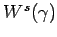 (instabile Mannigfaltigkeit 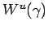) von
eine hyperbolische Ruhelage oder ein hyperbolischer periodischer Orbit von (17.1). Die stabile Mannigfaltigkeit 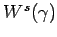 (instabile Mannigfaltigkeit 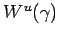) von  ist die Menge aller der Punkte des Phasenraumes, durch die Orbits verlaufen, die für 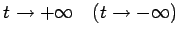 gegen
ist die Menge aller der Punkte des Phasenraumes, durch die Orbits verlaufen, die für 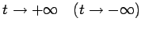 gegen  streben:
streben:
| 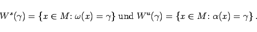 | (17.18) |
Stabile bzw. instabile Mannigfaltigkeiten bezeichnet man auch als Separatrixflächen.
| Beispiel |
|
In der Ebene wird die Differentialgleichung |
betrachtet. Die Lösung von (17.19a) mit Anfang (x0,y0) zur Zeit t= 0 ist durch
| 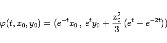 | (17.19b) |
explizit gegeben. Für die stabile bzw. instabile Mannigfaltigkeit der Ruhelage (0,0) von (17.19a) erhält man:
Es seien M und N zwei glatte Flächen des  und LxM bzw. LxN die entsprechenden Tangentialebenen durch x an M bzw. N. Die Flächen M und N heißen transversal zueinander, wenn für alle 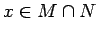 die Beziehung
und LxM bzw. LxN die entsprechenden Tangentialebenen durch x an M bzw. N. Die Flächen M und N heißen transversal zueinander, wenn für alle 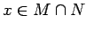 die Beziehung
| Beispiel |
|
Für den in der folgenden Abbildung dargestellten Schnitt gilt 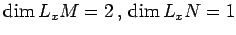 und 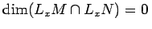. Also ist der in der Abbildung dargestellte Schnitt transversal. |